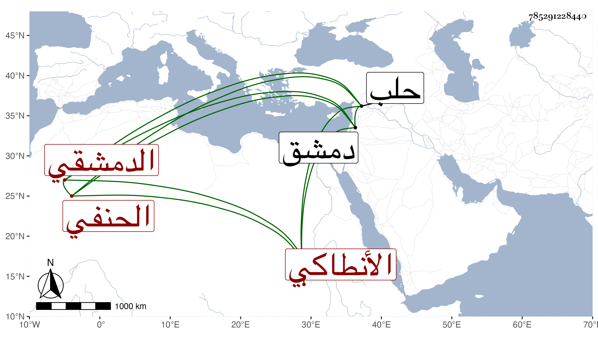

0902Sakhawi.DawLamic.ITO20230111-ara1.EIS1600.785291228440
Biography ID: 785291228440
569
محمود بن عمر بن محمود بن إيمان الشرف الأنطاكي ثم الدمشقي الحنفي . هكذا سماه الحافظ ابن موسى والعيني والنجم بن فهد في معجم أبيه وآخرون وسماه شيخنا مسعودا والأول أصح فكذلك هو في تاريخ ابن خطيب الناصرية ، قدم من بلده إلى حلب ثم إلى دمشق فسمع بها من ابن كثير والصلاح الصفدي وغيرهما وقرأ في الفقه على الصدر بن منصور ولازمه وعلى الشهاب أبي العباس العنابي كتب ابن ملك وغيرها من كتب الأدب وحصل العربية على طريقة ابن الحاجب إلى غيرها من العلوم العقلية وكتب الخط المنسوب وتصدى لإقراء النحو بجامع بني أمية من سنة بضع وستين حتى مات ، وكان لفقره يأخذ الأجرة على التعليم بل تعانى الشهادة فلم يكن بالمحمود فيها مع تواضعه ولطافته وحسن نوادره وجودة نظمه وإنشائه . قال شيخنا في إنبائه أنه تقدم في العربية وفاق في حسن التعليم حتى كان يشارط عليه إلى أمد معلوم بمبلغ معلوم قال وكان مزاحا قليل التصون . مات في ليلة الأربعاء خامس شعبان سنة خمس عشرة وهو في عشر الثمانين وممن لقيه الجمال بن موسى المراكشي فأخذ عنه هو والموفق الأبي وقال ابن خطيب الناصرية في تاريخه كان عالما بالنحو انتهى علمه إليه في وقته إلا انه كان منبوزا بقلة الدين .
